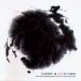
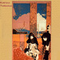
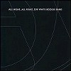
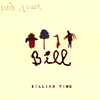
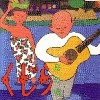
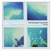
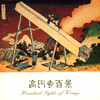
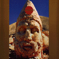
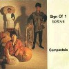
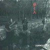

strange music page
japanese strange music * * * Ka - Ko
- 架空線上の音楽
- CASSIBER
- 金子飛鳥
- KATRA TURANA
- 勝井祐二
- karak
- 菅野よう子
- 菊地雅章
- 北川晴美
- きどりっこ
- 嘉納友子
- KILLING TIME
- KINGJOE
- Qujila
- Qujila"Dragon"Orcehstra
- 葛生千夏
- gutevolk
- GROUND-ZERO
- KENNEDY
- ゲルニカ
- 高円寺百景
- Goddess in the morning
- 駒沢裕城
- こまっちゃクレズマ
- 是巨人
- COMPOSTELA
#contrabass奏者の沢田穣治さんのプロジェクト、わりとコラージュ的な作り。弦の占める割合が多いので、独特な雰囲気を出しています。チェンバーっぽい感じもする。
- doya
- リアリズムの宿
- ４対５の逆襲
- east fantasy
- 武羅汁慕情
- childs street
- 鎌倉高校前から稲村ケ崎まで
- ヒポクラテスの定理
- 日常における奇妙と現実の間
- winter ghost
- 静かな真昼
- 未来世紀 "カントク"
- 沢田穣治 (bass,contrabass,samples)
- 工藤美穂 (violin)
- 沼沢美香 (violin)
- 小原直子 (viola)
- 望月直哉 (violin,cello)
- 秋岡欧 (bandolim,12 string guitar)
- EPO (voice)
- ホッピー神山 (keyboards,samples)
- 渡辺亮 (berimbau,perucssion,gong)
- 吉田達也 (drums,vocals on 2.3.8.11.)
- 鬼怒無月 (guitars on 2.8.11.)
- 小田郁子 (violin) on 5.6.7.)
- 山本精一 (guitar,drums on 5.6.11.)
- 長谷川忠 (guitar,drums on 5.6.11.)
- Itamara Koorax (voice on 5.7.)
- 高良久美子 (marimba on 4.11)
God Mountain: GMCD-013
#カシバーの1992.10.23の来日のライヴ盤＋その音源のGROUND-ZEROによるミックスです。
篠田昌巳は死ぬ直前、GROUND-ZEROも解散直前。両方とも鬼気迫る感じ。

disc 1: CASSIBER LIVE IN TOKYO
- A Screaming Comes Across The Sky
- They Have Begun To Move
- They Go In Under Archways
- Philosophy
- Gut
- Prisoner Chorus
- Todo Dia
- Come On! Start The Show!
- It's Never Quiet
- O Cure Me
- Our Colourful Culture
- Prometheus
- Remember
- I Was Old
- Orpheus Mirror
- I Tried To Reach You
disc 2: CASSIBER LIVE IN TOKYO re-mixed by GROUND-ZERO
- Across The Sky #1
- O Cure @ Me
- Gutt
- a. Across THe Sky #2
b. At Last I Am Free
c. Acros The Starts
disc 1:
- Christoph Anders (vocals,sampler,guitars)
- Chris Cutler (drums,percussions,electronics)
- Heiner Goebbels (piano,sampler,Chinese violin,guitars,vocals)
- 篠田昌巳 (alto sax)
disc 2:
- 大友良英 (turntables,hard-disk recorder,rhythm box,CD-J)
- 益子樹 (DX-7 on 1.)(beats on 3.)
- ミズヒロ (Mono-Poly on 1.3.)
- 永田一直 (ARP 2000 on 1.)
- HACO (voice on 2.)
- 八木美知依 (20 string koto on 2.)
- 松原幸子 (sampler on 2.3.5.)
- 植村昌弘 (drums on 2.3.)
- 一楽儀光 (electronic sounds on 2.)
- 千野秀一 (piano,combo organ on 4.5.)
- 広瀬淳二 (tenor sax on 5.)
- 菊地成孔 (tenro sax on 5.)
- 大谷安宏 (computer on 5.)
- 芳垣安洋 (drums on 5.)
- ナスノミツル (bass on 5.)
Off note: ON-25 (1997)
#金子飛鳥の初のソロアルバム。Tipographicaの今堀恒雄さんや元TENSAW(日本のHR)のGricoさんなどが参加しています。特徴のあるE-Violinが主体で非常に強力な内容です、特に１曲目はまるでHRなノリでとても格好良いです。
bass富倉安生ってのがイイですね、ちょっとこのリズム対はかっちょいい。
- DEATH DANCE
- FROM CRATER WALLS
- 銀の月 黒い瞳
- walking eyes
- Replica of the history
- 邂逅
- basquelo
- ジェンネ ジェノ
- graduale
- SOFTLY
- 金子飛鳥 (violins,viola,vocals)
- 今堀恒雄 (guitars)
- 富倉安生 (bass)
- Grico (drums,percussions)
- 渡辺等 (mandorin,upright bass)
- 仙波清彦 (percussions)
- 八尋知洋 (percussions)
- 本間哲子 (vocals)
- 飛鳥strings (strings)
- 渡辺香津美 (guitars on 7.)
- 吉野弘志 (bass on 7.)
- 坂田明 (sax on 8.)
- 板橋文夫 (piano on 8.)
- 井野信義 (bass on 8.)
Victor/Roux: VICL-337 (1992)
#2枚目のソロアルバム。前作に比べてエスニックでリラックスした内容の曲が多いです。ボーカルの占める比重もかなり高くなっています。個人的には前作の方が好きですがこちらのアルバムの方が躍動感みたいなものが感じられます。
- NATARAJA
- echoes
- marg
- dawn
- where the roc lands
- tamayura
- 花の翼 (wreath of flight)
- 夢の跡
- jane man jane jana
- upstream
- 春の声 (voice of spring)
- earth turns eternal
- 金子飛鳥 (violins,vocals)
- richard bailey (drums,percussions)
- 原田クマ (bass)
- james lascelles (keyboards)
- winston delandro (guitars)
- pandit denish (tabla,conga)
- 清水ミネコ (backing vocals)
- 木津しげり (backing vocals)
- luis jardin (percussions,shaker)
- nayan ghosh (tabla)
- susan shattock (backing vocals)
- gosfrey wang (keyboards)
- 仙波清彦 (percussions)
- 渡辺香津美 (guitars)
- 渡辺等 (bass)
BMG Victor: BVCR-722 (1995.10.18)
#金子飛鳥さんのストリングスグループでのアルバム。ソロアルバムでの曲などがアレンジしなおされて収録されてます。なんか瑞々しい感じですね。
- modern energy
- new day
- dreaming don quixote
- love song 1970's
- ninfea
- cuttlefish dance
- oak in the field
- water's gift
- the dreams of an embryo
- dance of death
- 金子飛鳥 (violins)
- 岩井真美 (violin)
- 植田みゆき (violin)
- 大久保祐子 (violin)
- 大林典代 (violin)
- 金原千恵子 (violin)
- 桑原幹子 (violin)
- 小谷泉 (violin)
- 志賀恵子 (violin)
- 竹内香織 (violin)
- 塚本弥生 (violin)
- 栃谷若子 (violin)
- 原えつこ (violin)
- 深見邦代 (violin)
- 柳川寛子 (violin)
- 渡辺千絵 (violin)
- 久保田明宏 (viola)
- 熊田真奈美 (viola)
- 高橋淑子 (viola)
- 丸山理沙 (viola)
- 村山達哉 (viola)
- 両角りか (viola)
- 笠原綾野 (cello)
- 河田夏実 (cello)
- 桑原聡子 (cello)
- 立花まゆみ (cello)
- 橋本歩 (cello)
- 藤沢俊樹 (cello)
- 立花泰彦 (contrabass)
- 幕内弘司 (contrabass)
- 吉野弘志 (contrabass)
BMG Vicotr: BVCR-1421 (1995)
#"PU"という映画のサントラです、まぼろしの世界の勝井祐二さんが音楽を担当しています。この映画を見たこと無いので、このCDの音がどんな感じに使われているのか分かりませんけど、わりとアコースティックな雰囲気のCDです。メンツみて想像するようなアバンギャルドな音じゃないです。個人的にはあんまりピンとこなかったけど。
- PU
- OPENNING
- PAKU CHON-1
- PAKU CHON-2
- PAKU CHON-3
- LILIKO
- ABU-GAMI
- LILIKO'S EYE
- WILD WEST (酒場のテーマ)
- PAKU CHON WALK
- TRUCK (トラックはプの里へ)
- CASUBA
- KISHOURE
- LILIKO REPRISE
- PRIMITIVE MACHINE
- A PART OF THE MACHINE
- AKA-KEN
- SEED
- 勝井祐二 (violin,voice)
- 芳垣安洋 (percussions)
- 鬼怒無月 (guitars)
- 大坪寛彦 (bass)
- 広瀬淳二 (sax)
まぼろしの世界: MABO-002 (1995)
#マイナー演劇をイメージさせるような音楽。やっぱり実験音楽系です。斉藤千尋さんは２枚目の頃には抜けて
LACRYMOSAの活動をしています。

- 喜ばしき一日
- 円錐型テーブル
- 今日の散歩はきりがない
- 孵化
- ホンタイジーテレフォン猟奇譚
- 亀の笛、恐龍の笛
- マーチ
- 広池敦 (vocals,grockenspiel,percussions)
- 斉藤千尋 (bass)(violin on 1.)
- 斉藤史彦 (piano,percussions)
- 松井亜由美 (violin)
- 田中信幸 (drums,percussions)
- 渡辺聡司 (flute)
- 三木黄太 (cello on 5.7.)
- 渡辺裕二 (trumepet on 7.)
- 長島宏 (clarinet on 5.)
- 徳田振作 (oboe on 5.)
- 山田和宏 (fagotto on 5.)
- 増田直之 (horn on 5.)
WAX RECORDS: TKCA-30046 (original release 1982)
#SWITCHレーベルからのリリース。LPで持ってるんですけど、なんかとのカップリングでCDが出てるみたいです。ジャケット可愛いですこれ。
SIDE:A
- ツリガネムシの唄
- THE END-mrn
SIDE:B
- THE END-aft 1
- THE END-aft 2
- THE END-evn
SWITCH CORPORATION: 15SW-4502 (1985.3)
#渋谷レコファンにて、\1,300くらいだっけなぁ？飲み会前にちょいと、ブラブラしてて発見。ほんとは別のモノ捜してたんですけど。
やっぱすごい特徴あるグループで(もうとっくに解散してますが)、この2枚目はLacrymosaのChihiro S.さんは抜けてのアルバムになります。広池さんのヘンな裏声はあんま好きじゃないんですけど、なんか神経質なピアノとバイオリンの音は面白いです。特に藤田佐和子さんって方かな面白いなと思いました。(1999.10.22)
- Acid Rain
- okies-adutam
- Orange Sunshine
- Epigenesis
- Utan-tan-ta
- Stentor-song (ラッパムシのうた)
- ヤタラちゃんの騒音公害 (Yatara-chan's annoying noise)
- ヤタラちゃんの偏執狂 (Yatara-chan's in a paranoia)
- Hushaby, Lullaby
- Vorticella-song (ツリガネムシのうた)
- あうのがつらいの (Toro-toro)
- 広池敦 (voice,alminum tubes)
- 松井亜由美 (violin)
- 三木黄太 (cello)
- 藤田佐和子 (piano,synthesizer)
- 田中信幸 (drums)(drum programming on 1.)
- 北島妙子 (bass on 1-3.)(voice on 1.3.4.8-b.9.)
- 原マスミ (vocals on 8-b.)
- 野澤美香 (chorus on 8-b.9.)
- 阿部ゆうじ (guitars on 3.)
- Sandii (vocals on 8-b.)
- 久保田真琴 (vocals on 8-b.)
- 地引雄一 (chorus on 8-b.9.)
WAX RECORDS: TKCA-30047 (original release 1986,Telegraph Records)
#小峰公子さんと保刈久明さんのグループ。基本的にはzabadakにとても近い路線ですが、zabadakと比べると淡々としている感じがします。２枚目もほとんど同じ路線です。
- 羽化
- wing of an angel
- 明日ヲ見ル丘
- 水の底の映画
- 鯨の夢
- 雨の日のpiano
- 傷つけぬよう離れぬように
- throw to me
- cadenzaの森
- 老人と舟
- 小峰公子 (vocals,accordion)
- 保刈久明 (guitars,programming)
- 金子飛鳥strings (strings on 10.)
- 吉良知彦 (guitars,mandolin on 4.)
- 宮田繁男 (drums,percussions on 1.2.4.5.8.9.)
- 渡辺等 (bass on 2.3.7.9.)
- 内田ken太郎 (bass on 1.4.5.8.)
- 近藤正明 (12strings-guitar on 2.)
- 菅野よう子 (piano,synthesizer on 3.6.7.8.9.)
- 坂本俊介 (synthesizer operating)
- 朝川朋之 (harp on 10.)
King Record: KICS-110 (1991.6.21)
#2枚目、ほとんど前作と同路線です。この後シングルを１枚出した後、ほとんど活動停止状態になってしまいました。シングルの内容がとても良かったので残念です。現在またレコーディングをしているとかいう話も有りますが...
- visions of highland
- 夢のひき潮でおやすみ
- 心が揺れる意味
- ゆめのスウプ
- 海の声
- 海辺のまちで
- KEEP A LIGHT BURNING
- 駆ける
- 僕の箱庭
- 夜を包んで
- 小峰公子 (vocals,kalimba,whistle,lyrics)
- 保刈久明 (guitars,programming,backing vocals)
- 宮田繁男 (drums on 1.2.3.7.8.)
- 渡辺等 (bass on 3.4.8.10.)
- 内田ken太郎 (bass on 1.2.7.)
- 近藤正明 (guitars on 7.)
- 菅野よう子 (piano,synthesizer,accordion on 1.2.3.4.7.8.9.)
- 坂元俊介 (synthesizer,programming on 1.2.3.4.7.8.)
- 三沢またろう (percussions on 1.2.3.4.7.8.)
- 吉良知彦 (backing vocals on 7.)
- 前田康美 (backing vocals on 8.)
- 野田郁子 (trumpet on 9.)
- 金子飛鳥strings (strings on 10.)
KING RECORDS: KICS-202 (1992.3.25)
#カラクです、6年ぶりのアルバムです。ほとんど小峰公子さんのソロアルバムです、あまり保刈久明さんの印象は無いです。とはいっても、前作とほとんど音楽的な変化は無いようです。
- 花咲く頃に会いましょう
- 私が見てる
- On this Planet
- 冬の陽だまり
- 盗まれた飛行船
- Tira lu-la
- 迷路を抜けて
- 振り子の部屋
- 七月の雪
- 保刈久明 (guitars,programming,backing vocals)
- 小峰公子 (vocals,accordion)
- 吉良知彦 (guitars,bass,programming)
- 宮田繁男 (drums on 1.2.6.7.9.)
- 新居昭乃 (backing vocals on 9.)
- 松永孝義 (bass on 1.6.)
- 山口とも (percussions on 4.5.)
biosphere records: BICL-5002 (1998.4.22)
#AAOBBという・・・70'sマイルスみたいなバンドです。菊地成孔の
DCPRGとか東京ザビヌルバッハとかでやってるのに近いような感じです。DCPRGでは菊地雅章さんの「ススト」の曲とかカバーしてますし、DCPRGのお手本になったよーな感じかな？
実際はDCPRG程混沌とした感じは無く、もっとスッキリした印象です。んでも1989当時でこんなグルーヴの為の音楽やってたなんて驚き。長いですけど、どんどんテンション上がってくので早送りしないでちゃんと聴きましょう。カッコイイですよ。(2002.11.9)

- GETTING READY
- A ROAD TO SOUTH DAKOTA
- MARKETPLACE
- OLD SOUTHERN BOOGALOO
- COLOR OF BELLADONNA
- SATAN OF CHATAN
- NEW NATIVE
- 菊地雅章 (keyboards)
- Konrad Adderley (bass)
- Victor Jones (drums)
- Aiyb Dieng (percussions)
- 峰厚介 (saxes)
- Kelvyn Bell (guitars,voice)
- Tomas Doncker (guitars)
- William Patterson (guitars,vocals)
PSC: MTCJ-3002/3003 (original release 1989)
#えーと一応菅野よう子さん名義でのリリースですけど、Winの"Earth Winds"っていうスカイリラクセーションゲーム(どんなゲームなんだろう)の音楽ですね。
なんか合唱曲とか声楽みたいなクラシカルな曲がメインです。個人的にはカウボーイビバップとかの何でも有り状態の方が好きですけど。
8曲目の菅野よう子さんのピアノだけの小曲が大好きです。沈んだり浮いたりするような雰囲気の。坂本龍一じゃないけど、こーゆーピアノ曲だけでアルバム作って欲しいです。(1999.8.9)
- Atomic Bird
- Reunion
- Next Time
- ABC Mouse Parade
- This EDEN
- Nowhere and Everywhere
- The man in the desert
- Artisan
- The Ship
- Hallelujah
- Lyndia
all music written and arranged by 菅野よう子
- 菅野よう子 (piano,keyboards)
- Warsaw Philharmonic Orchestra (orchestra)
- れいち (drums)
- 渡辺等 (bass)
- Zev Katz (bass)
- 今堀恒雄 (guitars)
- 溝口肇 (cello)
- Steve Wilson (soprano sax)
- Urata Keishi (sound architect)
- The Dunn Pearson Orchestra (strings)
- Cosmic Voices from Bulgaria (voice performance)
VICTOR ENTERTAINMENT: VICL-60159 (1998.1.1)
#えーと作曲陣が面白いです、矢口博康さんに渡辺等さんに門倉聡さんに鈴木さえ子さんです、矢口さんがけっこう活躍してます。実はあまりボーカリストとしては興味無いのですけど>北川晴美さん。今も昔もバックは面白い人々ばっかです。(ちなみに現在はPUGSとO.N.J.T.)
- MAKE ME UP
- HORIZON
- 太陽の系図
- 甘い退屈
- SACRIFICE
- SWEET TRAVEL
- BLUE SEPTEMBER
- 霧色の埠頭
- 北川晴美 (vocals)
- 矢口博康 (sax,guitars,chorus)
- 門倉聡 (keyboards,chorus)
- 渡辺等 (bass,guitars,ukulele)
- Ishitsubo Shinya (drums)
- 寺谷誠一 (drums)
- 野宮真貴 (chorus)
- 本間哲子 (chorus)
meldac: MED-34 (1988)
#えーとHoppy神山プロデュースです。そんなことはどうでも良くて、6曲目は板倉文です。
- siesta
- love & flowers
- きらめきの彼方に
- morning kiss me
- 雨音の肖像
- hello again
- 横顔
- shangrila
- 愛してあげたい
- 北川晴美 (vocals)
- Hoppy神山 (synthesizers,programming,acoustic guitars,chorus)
- Mecken (bass on 2.)
- 佐橋佳幸 (guitars on 2.8.)
- Steve Eto (Latin on 2.)
- Whacho (Latin,backing vocals on 2.8.)
- 渡辺等 (bass on 3.5.8.9.)
- 板倉文 (acoustic guitars on 6.)
- 斎藤ネコstrings (strings on 3.5.)
- 山川恵子 (harp on 3.5.)
- 菅原弘明 (computer on 1.3.5.8.9.)
ALFA RECORDS/ZaZa: ALCA-107 (1991.1.25)
#秋葉原のLIBERTYで\500で買いました。2枚のLPを1つにまとめたもの。ゲーム音楽っぽいバックにコケティッシュなvocalのへんなバンド。EXPOの松前さんが１枚目のほうに参加してます。
- 桃色金魚
- カオカオブクブク
- セレレガンスな和尚
- このこのこねこ
- 殿中でござる
- 乳酸菌シンドローム
- 流行通信簿
- らくだ
- ネムタリラン
- 浮世の恋
- METRONOSE
- 神のまにまに
- お面をつけた猫
- 秘密の送りオオカミ
- なんきんまめ
- あかずの間
track 1-6. from "セレレガンスな楽しみ"
track 7-16. from "流行通信簿"
- てんちゆみ (vocals)
- 佐藤隆一 (keyboards)
- 松前公高 (keyboards,sampler on 1-6.)
CAPTAIN RECORDS: CAP-1028-CD
#板倉文様からちょくせつ借りてしまいました...沖縄の方です。基本は沖縄民謡ですが、普通に聞いていてもとても良いです。沖縄に行ってみたくなります。
- Mi So La
- なれし古都
- タイ・アイランド
- INK
- アッチャメ
- 永良部ユリの花
- コロナ
- 想い
- 思い花
produce,arrangement by 板倉文
track 4.7. by 清水靖晃
- 嘉納友子 (vocals,chorus)
- 板倉文 (guitars,sanshin,bass,percussions)
- 清水靖晃 (sax,keyboards)
- 嘉納昌永 (sanshin)
- 嘉納千種 (chorus)
- 山木秀夫 (drums)
- 青山純 (drums)
- BAnANA-UG (keyboards,synthesizer operator)
- 富樫春夫 (keyboards)
- 清水一登 (keyboards)
- 鈴木VAGABOND正行 (bass)
- 石井明夫 (synthesizer operator)
- 美島豊明 (synthesizer operator)
- 加藤Joe Group (strings)
- 金子飛鳥Group (strings)
- 小川美潮 (chorus)
- 木津茂理 (chorus)
- 木津かおり (chorus)
東芝EMI: TOCP-6834 (1991.8.30)
#ずーっと捜してました、渋谷のレコファンのアナログコーナーで発見。
帯には"決定版、これが何？"とか書いてありました。解説カードには振り付けが載っていました....この曲では踊れないと思いますが。
初めて聞いたBOBの後半は板倉さんのギターがとても格好良かったです。
KILLING TIME名義としては初のミニアルバムですね。8687の夕焼けを思わせるような音、BOBのアヴァンギャルド、PERUの微かな緊張感とか、この時点で既に色々な要素を包括してますね。
- BOB
- 8687
- PERU
- 板倉文 (guitars)
- 清水一登 (keyboards,xylophone,clarinet)
- MA-TO (tabla,computer)
- 斎藤ネコ (violins)
- WHACHO (percussions)
- MECKKEN (bass)
- 仙波清彦 (drums)
- 矢壁篤信 (drums)
- 栄田嘉彦 (violin)
- 山田雄司 (viola)
- 溝口肇 (cello)
EPIC/SONY RECORDS: 12-3H-259 (1986)
#なかなか売ってないです、こんな面白いCDが全然手に入らないなんて、非常に問題。
1曲目、しょっぱなからアヴァンギャルドです。ザッパっぽい？とか思ってる間に、邦楽っぽくなったり、ジャズっぽくなったり、そんな中にも綺麗な旋律が垣間見たり。
気付くと次の曲、板倉文さんのカワイイ小曲です。
でB面(LPだと)、清水一登さんの「One For Each Sentiment (原題:収容所)」から、ストリングスが少しずつ不思議な盛り上がり方をしていきます、そして変拍子&変拍子。
ラストの曲が"日没"で、(ベスト盤で)初めて聴いた時とても印象に残った曲でした、初めて聴くのにちょっと懐かしくって.....ちょっと邦楽っぽいアレンジ、素晴らしいです。
とりあえず、このジャケを見かけたら買っておきましょう。買わなくてどーするよ、こんなCD。

- SKIP
- 老人たちの夢 -Hearing Without A Break While Not Hearing A Break-
- One For Each Sentiment
- 日没
produced by KILLING TIME,飯泉俊之
directed by 福岡知彦
- 板倉文
- 清水一登 (keyboards,xylophone,clarinet)
- MA*TO (tabla,computer)
- 斎藤ネコ (violins)
- WHACHO (percussions)
- MECKKEN (bass)
- 仙波清彦 (drums)
- 青山純 (drums)
- 松本治 (trombone)
- 栄田嘉彦 (violin)
- 山田雄司 (viola)
- 藤森亮一 (cello)
EPIC/SONY RECORDS: 28-8H-142 (1987)
#ヒット曲(?)「奴隷の恩返し」(ようやく)収録です。これが初のフルアルバムになるみたいです。「IRENE」はサンディーや小川美潮がボーカルを取る、組曲みたいな感じの曲です。
「沈黙する湖」とかとてもとても綺麗な曲です、信じられないくらいの。
アバンギャルドでノスタルジックでポップ。こんなバンドがKILLING TIME(ヒマつぶし)を名乗ってるんだから、フツーな音楽なんて聴けなくなっちゃいます。

- KOKOROWA
- 既知との遭遇 [A close encounter with you know what]
- 沈黙する湖 [Psychotropicnic]
- IRENE
- 虫の知らせ [Presentiment]
- 腰くだけ [A'ole i pau k'i'ni]
- BENGAWAN SOLO
- SONG FOR FOOD
- オフちゃん
- 奴隷の恩返し
produced by KILLING TIME,飯泉俊之
directed by 福岡知彦
composed by
青山純 (1.)
清水一登 (2.4-b.)
板倉文 (3.4-d.5.)
WHACHO (4-a.)
Ma*To (4-e.)
- 板倉文
- 清水一登
- Ma*To
- 斎藤ネコ
- WHACHO
- 青山純
- 横山雅史
- SANDII (vocals on 4-2.)
- 小川美潮 (vocals on 4-3.)
- HAMZA EL DIN (vocals on 4-4.)
- YOSHIPON (vocals on 4-1.)
- ああもん (vocals on 4-5.)
- ANTENOR DE PAULA BARROS JR. (chorus)
- FRANCIS SILVIA (chorus)
- 太田裕美 (chorus)
- れいち (chorus)
- 栄田嘉彦 (violin)
- 斉藤真知亜 (violin)
- 山田雄司 (viola)
- 藤森亮一 (cello)
EPIC/SONY RECORDS: 32-8H-5041 (1988.8.26)
#ugtk様から譲って頂きました....多謝。
板倉文名義にするかちょっと迷ったんだけど、とりあえずこっちに書いておきます。ストリングスの曲と半々くらいかな？結局最近気付いたんですけど、板倉文さんの魅力ってやっぱり和音なんだなと。メロディもリズムも好きなんですけど、初期GONTITIのアレンジとかサントラの仕事とか聴いてると、やっぱりイチバン特徴的なのは和音の響かせ方じゃないかなと、思いまして。
そんなわけで、このアルバムも見かけたら買ってください、いいから。
あとやっぱ"日没"...イイ曲ですね。
- RUST OF THE FRAME
- 重い靴
- 虹の架け橋
- 二つの夜
- STARDUST
- DIALOGUE
- マニラ出張
- OVER THE RAINBOW
- MEMORIES OF YOU
- 響きの庭
- 日没
- 板倉文 (guitars.keyborads)
- 清水一登 (keyboards,sax,percussions)
- Ma*To (computer,synthesizer manipulation,keyboards)
- 斎藤ネコ (violin)
- WHACHO (percussions)
- 青山純 (drums)
- 横山雅史 (bass)
- 石井AQ (computer,synthesizer manipulation)
- 渋谷毅 (keyboards)
- 川端民生 (bass)
- 藤井信雄 (drums)
EPIC/SONY RECORDS: 28 8H-5054 (1988)
#KILLING TIMEのベスト盤.....高校の頃にこのCDを中古屋で買ってなかったら、こんなCDを沢山買う人生になってなかったんじゃないかなと思います、そしたらこんなHPも作って無かったと思います。
とりあえずKILLING TIMEの入門盤としての一枚なんですけど、やっぱり廃盤。でも、ほんと見かけたら買ってあげてください。詳細なデータとかも付いてます。

- PERU
- BOB (edit version)
- 既知との遭遇 (a close encounter with you know what)
- 老人たちの夢 (hearing without a break whille not hearing a break)
- EBRIO
- 8687
- 沈黙する湖 (psychotropicnic)
- 日没
EPIC/SONY RECORDS: 30-8H-5107 (1989)
#KILLING TIME名義でのラストアルバム。全6曲33分とやや短いですが、密度は高いです。
このアルバムは清水一登さんの色が強いです(3曲目6曲目以外は清水さん作曲)
3曲目「MIFUNE」は何故だかFUNK調、うーん板倉さんっぽくない....嫌いじゃないけど。
「BLIVITS」は清水一登さんのライヴに行くと大体いつもやっている曲、やっぱりこのメンバーで聴いてみたいですけど。
「Limbo's Dance」は.....ミニマルですね、ライヴ録音かな？

- Upon Hearing
- Fall for Sharp
- MIFUNE
- Blivits
- Bugdad
- Limbo's Dance
produced by KILLING TIME
directed by 福岡知彦
recorded,miexd by 飯尾芳史
- 板倉文 (guitars.string instruments)
- 清水一登 (keyboards,mallet instruments,woodwinds)
- Ma*To (tabla,keyboards)
- 斎藤ネコ (violin)
- WHACHO (percussions)
- 青山純 (drums,percussions)
- MECKEN (bass)
- 篠田昌巳 (alto sax,bariton sax)
- 村田陽一 (trombone)
EPIC/SONY RECORDS: ESCB-1066 (1990)
#うーんあまり好きじゃないんですよね、ズビビビビ/ズガガガガ系の音。
中野の中古屋さんで\500でした。面子オモシロそーだったんで一応買ってみたんですけど。(1999.7.25)
- X-VIEW
- GOFFER DIP
- ACE
- M.Z.M.P.X.
- SP
- DM VS DM
- TROOP PACK
- PG(239)
- MOTHER
- RED LOAM
- BONANZA
- HOSANA
- MULTI-PATH
- PK-LALA
- APOGEE
- HEAVEN
- PARALLAX
- CUSTOM-6
- 益子樹 (guitars on 2.3.4.11.)(voice on 7.)(samples on 14.)(synthesizers on 16.)
- 原田仁 (bass on 2.3.4.6.8.11.14.)
- ササキヒデアキ (tapes,samples,electronics,voice on 2.3.4.5.7.8.10.11.12.14.16.)
- 芳垣安洋 (drums on 2.3.4.6.8.10.11.14.)(voice on 7.)
- 本木良義 (motokitronics on 3.6.7.11.)
- 内橋和久 (guitars,effects on 5.9.12.16.)
- 広瀬淳二 (sax on 3.10.11.)
- 勝井祐二 (electric vioin on 5.11.)
- reck (voice on 13.)(guitars on 14.)
- いとうはるな (voice on 1.17.)
- Dennis Gunn (voice on 99.)
CREATIVEMAN DISC: CMDD-00013 (1996.1.8)
#近所の中古屋で\500。見本盤とはいえあんまりなんで買ってきました。くじらって久々に聴くなぁ～とか思いながら聴いてみたら結構良かったです。
とても素朴な感じの歌なんですけど、なんかアレンジなんかは結構凝ってて、だからと言って歌メロの邪魔するようなモノでもなくて。昔聴いて「あんまり好きじゃ無いや」とか思ってたんですけど、ちょっと見直し。
あと清水一登好きとしては、可愛らしいマリンバの高速フレーズが聴ける「プロペラ」なんか楽しいです。この時代のEPIC/SONYの音（福岡知彦絡み）はもーちょい評価されても良さそうなものと思うんですが、どうなんだろう？(2003.2.28)

- ラジオ
- ともだち
- ハモニカ
- 火星
- ナガラリバー
- ジャム
- 木の実
- プロペラ
- キャラバン
- 島の娘
produced by 杉林恭雄
directed by 福岡知彦
- 杉林恭雄 (guitars,vocals)
- 楠均 (drums,percussions)
- キオト (guitars)
- 幸田実 (bass)
- Pecker (percussions on 1.5.9.10.)
- 清水一登 (clarinet on 2.5.9.)(marimba on 7.8.10.)(piano on 7.)
- 駒沢裕城 (pedal steel on 3.6.10.)
- 八尋知洋 (percussions on 4.)
- 関島雅樹 (computer on 2.4.7.)
- XEM (flute on 4.)
- ヤン冨田 (steel drum on 5.)
- 小玉和文 (trumpet on 5.)
- 増井朗人 (trombone on 5.)
- 斎藤ネコ (violin on 6.)
- 栄田嘉彦 (violin on 6.)
- 山田雄司 (viola on 6.)
- 藤森亮一 (cello on 6.)
- 板倉文 (charango,bandrin on 10.)
EPIC/SONY RECORDS: QY-8H-90057 (1989)
#実は...あんまりクジラ(杉林恭雄)って好きになれないんですけどねー。これはちょっと参加メンバーに惹かれて買っちゃいました。(故)篠田昌巳さんのサックスがやっぱり格好良いですね。素朴で力強い音楽。
- ヨナの夢
- インマイソウル
- ドラゴン
- ココナツ
- 象のダンスホール
- パラシュート
- アリヤ
- パレケ サ ソレイニャ [ラテン的な愛の言葉]
- 風車
- レインダンス
- AMANOIWATO
- 杉林恭雄 (vocals,guitars,programming)
- キオト (guitars,chorus,programming,alto sax)
- 楠均 (drums,percussions,chorus,acoustic guitars,synthesizers)
- 幸田実 (bass,soprano sax)
- 駒沢裕城 (pedal steel guitar,mandolin)
- 玉城宏志 (guitars,trumpet,chorus)
- ロケットマツ (piano,organ,accordion,synthesizers)
- 関島岳郎 (trombone,tuba,trumpet)
- 篠田昌巳 (alto sax,tenor sax,bariton sax)
EPIC/SONY RECORDS: ESCB-1275 (1992.2.21)
- the may queen
- nature rewards me
- a recent letter
- fairy-land
- the city in the sea $1
- the city in the sea $2
- the voyage
- since i left you (sonnet 113)
- eldorado
- eulalie -a song
- 真珠
- 葛生千夏 (vocals,programming)
- 今堀恒雄 (guitars)
adisc/salisbury: adisc-sal0001 (1992)
- to hellen
- isabella
the lady of shalott
- part 1
part 2
part 3
- part 4
part 5
part 6
- elaine the fair
- my puppy
- a recent letter 2
- the haunted palace
- populous main hteme
- mondy, tuesday
- 葛生千夏 (vocals,programming)
- 今堀恒雄 (guitars on 3.4.)
- 井上禎 (backing vocals on 10.)
- 関島雅樹 (backing vocals on 10.)
adisc/salisbury: adisc-sal0002 (1993)
#渋谷タワレコの6F音響派コーナー(そんな名前はついてないけど)で試聴して。
最近のエレクトロニカとか呼ばれる音って、なんだか曲の中でどーしてもメロディが寸断されるよーなのばっかりで。どーも気に入らなかったんでけど。コレの3曲目を聴いたらなんかもうハマっちゃって、目の前を映像が流れていくよーな少しノスタルジックな感じの曲。
そのままレジに持っていって家で聴いてみて、「にしやまひろのみたいだなぁ～」とか思ったら
にしやまひろのでした。よく見ろよ俺。
ま、そんな訳で 'Gutevolk = にしやまひろの'の細野晴臣さんのデイジーからの1枚目です。Childiscからもアルバム出してますけど、確かに竹村延和っぽい所も有ります。それより歌声聴いててコシミハルを思い出したんですけど。
エレクトロ室内楽みたいな感じですけど？やっぱどんな形態でもメロディーのイイものは聴けるなと思いました。あジャケットもとても好みです。
DWWW (直リン) (2002.8.11)

- musical balloon
- dream fish
- rainy dragoon
- yume-kitan
- arrested
- coquille
- morrow
- see you tomorrow
- voice in a pool
- hinagiku
- moon tripper
- the humming of tiny people
- strange dream
- mizuno soko (live version)
- nishiyama hirono
- takagi masakatsu (twinkbee talk on 4.)
- chacot (girl's talk on 4.)
- paul alexander (narration on 4.)
- yuma (child's talk on 12.)
- karla reiffe (witch's talk on 12.)
- saito teppei (tribal instruments)
daisyworld discs: CTCR-14221 (2002.8.7)
#GROUND-ZEROです、確かこのアルバムが出た頃に新宿PIT-INNでライヴを見ました.....その時のライヴは松原さんのsamplerの音でかなり耳をやられたのと、このCDに入ってる"平和に生きる権利"がメチャメチャ格好良かったことを覚えています。
大友良英さんの音って(自分にとって)時々格好良いんですけど、時々理解できない部分も有って、GROUND-ZEROとかはとりあえず手をつけないでいたんですけど、思わず買っちゃいました。(もう解散しちゃいましたけど)
このアルバムでは"plays standards"ちゅう事で、大友さんセレクトの色んな曲がGROUND-ZERO流に演奏されています。なんだか単純ですけど、1,12曲目はほんと単純に格好良いと思いました。あとは大好きな10曲目、
NOVO-TONOの夢の半周、Phewさん参加。
しかしやっぱりこの手の音楽聴くには避けて通れないバンドですね....いつのまにか他のCDも揃ってるかも。(2000.7.22)
- 平和に生きる権利 + 篠新3/4
- ウルトラQ
- 悲しき天使
- Folhas Secas
- ワシントン・ポスト・マーチ + 日本解散
- アカシアの雨がやむとき
- Bones
- Where Is The Police? + The Bath Of Surprise
- 見上げてごらん、夜の星を
- 夢の半周
- カール広場のポプラの樹
- 男たちの挽歌 + 小さな願い
- 大友良英 (turntable,guitars)
- 内橋和久 (guitars,effects)
- 松原幸子 (sampler)
- 菊地成孔 (sax)
- 田中悠美子 (shamisens,voice)
- ナスノミツル (bass)
- 植村昌弘 (drums,percussioins)
- 芳垣安洋 (drums,percussions)
NANI RECORDS: NCD-201 (1997)
#KENNEDYのライブ盤、ＬＰのみで廃盤。すごいエネルギーの凝縮されたアルバムで何故ＣＤにならないのか不思議、最近のオルタナ系のバンドなんかよりずっと凄いと思います。
- TWINKLING NASA
- FLYING SHIP PART 1
- TASMANIAN DEVIL
- KREMLIN DREAM
- BIRDS OF FIRE
- BIRTH OF FIRE
- BIRDS OF HIGHER
- EXPLORER 1958 ALPHA
- FLYING SHIP PART 3
- 泉陸奥彦 (emotional guitars)
- JuJu北岡 (eccentric keyboards)
- 安田隆 (explosive drums)
- Itoh Kohji (impossible saxophones)
MONOLITH COMMUNICATIONS: MNK-8 (1987)
- 磁力ビギン
- 集団農場の秋
- 水晶宮
- 二百十日
- 少年の一番の友
- クラウド9
- パノラマ・アワー
- 輪転機
- 電力組曲
- ダムの唄
- 電力の道筋
- 電化の暮らし
- 髑髏の円舞曲
- 絶海
テイチク: TECN-15321
- 地球ゴマ
- 百年の宴
- ノンシャランに街角で
- 海底トンネル
- 或る雨の午后
- アンナブルナの鐘
- 青銅の軟体
- 来たれ 死よ
- 戒厳令
- 夢の端々
- 陸標
テイチク: TECN-15322
#えーと、RUINSの吉田達也さんの別バンドの1枚目。まるでマグマ、でもカッチョイイです。ユニゾンにユニゾンなユニゾンの曲を皆で歌ってます。

- IOSS
- DOI DOI
- MOLAVENA
- GEPEK
- YAGONAHH
- OZONEFALL
- ZHESS
- ZOLTAN
- AVEDUMMA
- SUNNA ZARIOKI
- 吉田達也 (drums,percussions,voices)
- 安紀 (keyboards,vocals)
- 桑原 (bass,vocals)
- 増田 (guitars,vocals)
God Mountain: GMCD-012 (1994)
- GREMBO ZAVIA
- GRADDINOBA REVOSS
- SLLINA VEZOM
- QUIDOM
- ARAMIDA
- BRAHGGO
- CEMBELL ROTTA
- RISSENDDO RRAIMB
- GUOTH DAHHA
- PAMILLAZZE
- 吉田達也 (drums,vocals)
- 安紀 (keyboards,vocals)
- 原田仁 (guitars,vocals)
- 坂本賢吾 (bass,vocals)
God Mountain: GMCD-027
#高円寺百景の3枚目。ゴッドマウンテンとかばっかし聴いてた頃がちょっと懐かしくなりますけどこれは磨崖仏からのリリースです、
ケンソーの小口さん(
RUINS/SYMPHONICAにも参加)が参加で以前にも増してプログレ度が高いです。
なんだか吉田達也さん関連では珍しく音が整理されてて、以前のような耳に突き刺さるような感じは無くなってたように感じました。聴きやすくなったのはいいんですけど、ちょっと何か物足りないような気もしました。円熟なんて吉田達也さんには似合わなそーな言葉も思い浮かんできたりとか。
- NIVRAYM
- BECTTEM POLLT
- LUSSESOGGI ZOMN
- VISSQAUELL
- MEDERRO PASSQUIRR
- AXALL HASCK
- MASCHTERVOZ
- GASSTTRUMM
- VALLCZEREMDOSS
- 吉田達也 (drums,vocals)
- 原田仁 (guitars)
- 坂本賢吾 (bass,vocals)
- 小口健一 (keyboards on 2.3.4.5.6.8.9.)
- Sagara Nami (vocals on 3.4.5.6.8.)
磨崖仏: MGC-18 (2001.3.)
#新居昭乃さんとYAYOI()さんのプロジェクト。アンビエント調のバックに２人の声が映えるといった感じです。何故か四人囃子の森園勝敏さんがゲスト参加しています。
- Reincarnation
- Ucraine
- Goddess in the Morning
- Flower crown
- Tribute of Jungle
- saga
- 14
- 新居昭乃 (vocals,programming)
- YAYOI (vocals)
- 吉良知彦 (instruments,produce)
- 保刈久明 (instruments,produce)
- 松林正志 (instruments,produce)
- 森園勝敏 (guitars on 4.)
- 菅井直人 (drums on 5.)
biosphere records: ZA-0009 (1996)
#日本のスチールギターでは一番有名な人だと思います。はっぴぃえんどの頃からスチールギターの音が聴こえてきて、クレジットを確認すると90%位の確率でこの人です。
メンバーは見ての通り、コンポステラ好きな人とかにはいいんじゃないかなぁ。声高に主張するんじゃなくって、ゆっくりと諭すような類の音楽。(2003.4.18)
- Positive Hole
- かもめ
- 落ちてきた鳥
- 公園の古い木
- 飛翔
- Feliz
- 駒沢裕城 (pedal steel guitar)
- 田村玄一 (pedal steel guitar)
- 篠田昌巳 (alto sax)
- 関島岳郎 (tuba,trombone)
- 中尾勘ニ (soprano sax,clarinet)
- 向島ゆり子 (violin)
- 六川正彦 (bass)
- 横澤龍太郎 (drums,percussion)
VIVID SOUND/PANORAMA MUSIC: VSCD-108 (1994)
#関内ディスクユニオンのJAZZコーナーでふらふら眺めてたら、こんなCDが出てたみたいです。というか二曲.....「JINTA」と「ダンスの楽園」をやってたので買っちゃいました。
「JITNA」はたしか林海象の三上博史主演の映画「二十世紀少年読本」に使われていた懐かしい感じのメロディーが気持ちの良い曲。ちなみにこれのサントラ「Circus Boy Song Book」ってのをこないだヤフーオークションで競り負けました.....ちくしょー。
あと「ダンスの楽園」は
ほとらぴっからっのアルバムにも入ってるへんてこなポップス。ボーカル違いもちょっと楽しい感じです。
とにかく、今度ライヴ有ったら行ってみようと思います。(2001.5.11)
- HAVA NAGEELA
- 月下の一群
- RUMELAJ
- JINTA
- BUBAMARA
- AUSENCIA
- COPZ LUCA
- ダンスの楽園
- ツンバラライカ
- ウェスタン・ピカロ
- ALE BRIDER
- 梅津和時 (clarinet,sax)
- 松井亜由美 (violin)
- 張紅陽 (accordion)
- 多田葉子 (soprano sax,alto sax)
- 関島岳郎 (tuba)
- 新井田耕造 (drums)
GOK SOUND: GKR-0101 (2001)
#是(THIS HEAT) + 巨人(GENTLE GIANT)というコンセプトのバンドらしいです、でもむしろメンツ見るとRUINS + ALTERED STATES + BONDAGE FRUITとか思っちゃいますね。最近のRUINSにちょっと構築性が増えたみたいに感じました。
本当は吉田達也 + 鬼怒無月って事で、昔見た磨崖仏のライヴみたいなのを期待したんですけど、そういう意味ではちょっと期待ハズレ。でもどっちにしろGENTLE GIANTを感じるよな部分も無かったような気がします。それにしても最近の吉田達也さんってプログレっぽいの多いですね。(1999.9.26)

- NEMRUT DAGI
- FOUR HOLES IN THE SKY
- ON REFLECTION
- CARELESS HEART
- KHAJURAHO
- SHE CAME BURNING
- PREPARATION
- YOU KNOW WHAT YOU LIKE
- ARABESQUE
- OUT OF HEAD
- COLD WAVE
- POET AND PEASANT
- 吉田達也 (drums)
- ナスノミツル (bass)
- 鬼怒無月 (guitars)
TZADIK: TZ-7223 (1999)
#ヘンな順番でCD買ってしまったんで、コレ聴くのが一番後になってしまいました。故篠田昌巳さんのコンポステラ名義の一枚目。
少し物悲しい感じの力強い音。最近だと大熊亘さんとか渋さ知らズとかSTRADAとかに近い音なんですけど、やっぱりこの人の存在感は独特で代わりの利かないモノだったように思えます。合掌。
特に1曲目(ハチャトゥリャンの曲みたい)が凄いジーンときます、なんか信じられないくらい雰囲気を持ったトラック。(2001.10.24)

- 小さな歌 (「少年時代の画集」より)
- 反射する道
- くつやのマルチン
- トッカータとフーガ
- 雨の中を
- 海を渡る風
- 箱の中の風景
- 結婚ポルカ
- 1の知らせ
- 最初の記憶
- ghhgh
- アジールのマーチ
- ふたりのマクシム
produced by COMPOSTELA,野田茂則
co-produced by 藤井暁
- 篠田昌巳 (alto sax,baritone sax)
- 中尾勘二 (soprano sax,trombone,drums,accordion)
- 関島岳郎 (tuba,trumpet)
VIVID SOUND/PUFF-UP: PUF-4 (1990)
#これは....故・篠田昌巳さんのコンポステラのライヴ音源です。メンバーだった、中尾さんと関島さんのプロデュースによるものです。
なんか昭和を感じさせるような音、ちょっと寂しいようなでも力強い音。(1999.5.16)

- 篠新 3/4
- 淵
- くつやのマルチン (shoemaker martin)
- 1の知らせ (sign of 1)
- オクタニア地方の民謡より (uilhon pren ton tamborin)
- 反射する道 (refecting lane)
- ハナバギラ (hava naguila)
- くさび
- 塔
- アジールのマーチ (march of asyl)
- 月下の一群
- Concertant March
- 海へ行くな (don't go to the sea)
- 篠田昌巳 (alto sax)
- 中尾勘二 (soprano sax on 3.4.5.6.9.)(tenor sax on 7.11.)(trombone on 1.12.)(drums on 2.6.8.9.10.)(klarinette on 13.)
- 関島岳郎 (tuba)
- 駒沢裕城 (pedal steel guitar on 2.3.4.5.)
- 吉野繁 (soprano sax on 1.7.11.12.)
- 川口義之 (baritone sax on 1.7.11.)(tenor sax on 12.)
- 久下恵生 (drums on 1.7.11.12.)
off note: ON-4 (1995)
#吉祥寺ディスクユニオンにて、何故かノイズコーナーで\600でした。なんでコレがノイズ....TZADIKレーベルだからと言っていい加減すぎ。やっぱりディスクユニオンだ。
篠田昌巳さんが死んでしまってる事もあって、なんかもう色々な意味で遠くなってしまったような音です。基本的に明るい音楽ではないんですが、かすかな明りを感じさせるような音が聞こえてきます。
関島岳郎さんのページに日本語タイトルが載ってますね。
- VIEW IN A BOX (箱の中の風景)
- S-1
- TWO MAXIMS
- IN THE RAIN... (雨の中を)
- SIGN OF 1 (1の知らせ)
- REMEMBRANCE OF FIRST TIME OF MY LIFE (最初の記憶)
- YONNYO ATTA BATTENGA
- A FALLEN BIRD
- UN STERBLICHE OPFER
- MARCH OF ASYL
- DEIN IST MEIN GANZES HERZ
- LA PLEGARIA A UN LABRADOR
- PETITE FLEUR
- PEBBLE OF AN ESTUARY
- LEBEDIK UN FREYLEKH
- 篠田昌巳 (alto sax)
- 中尾勘ニ (soprano sax)(tenor sax on 3.)(trombone on 7.8.9.13.15.)(clarinet on 6.)(drums on 1.5.6.)
- 関島岳郎 (tuba)
- 駒沢裕城 (pedal steel gutiar on 4.8.12.)(mandolin on 6.14.)
TZADIK: TZ-7211 (1997)